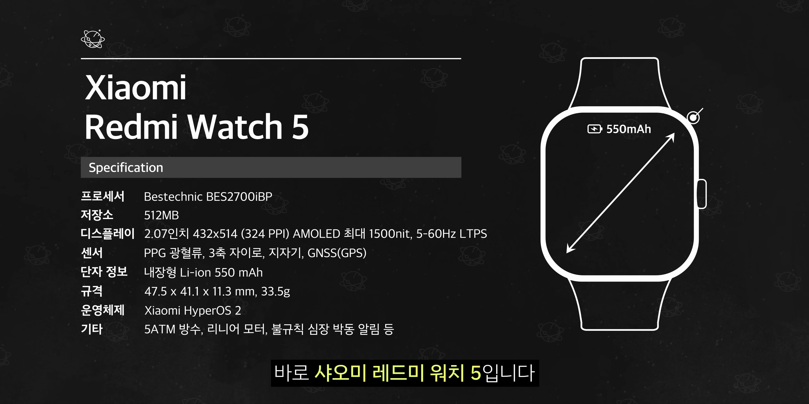
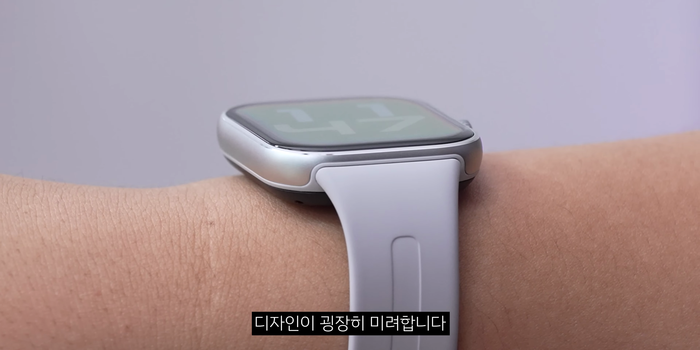
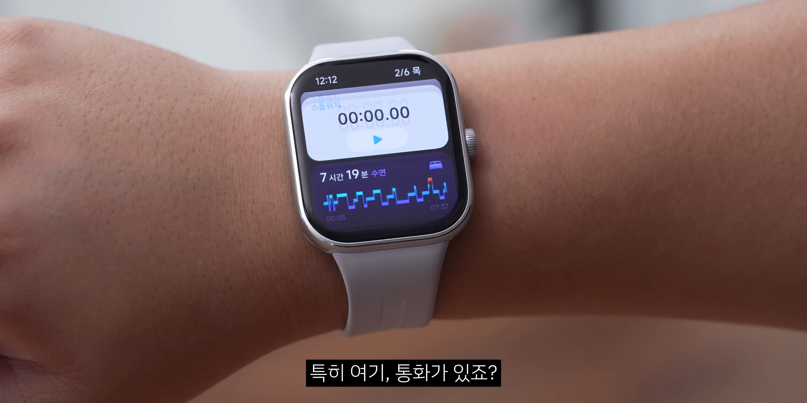
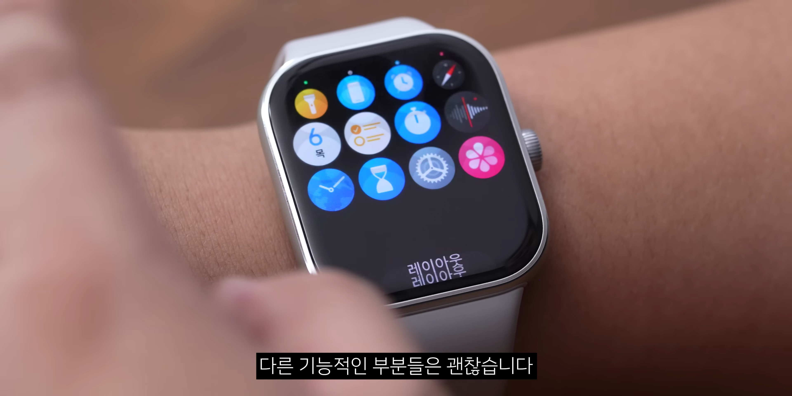
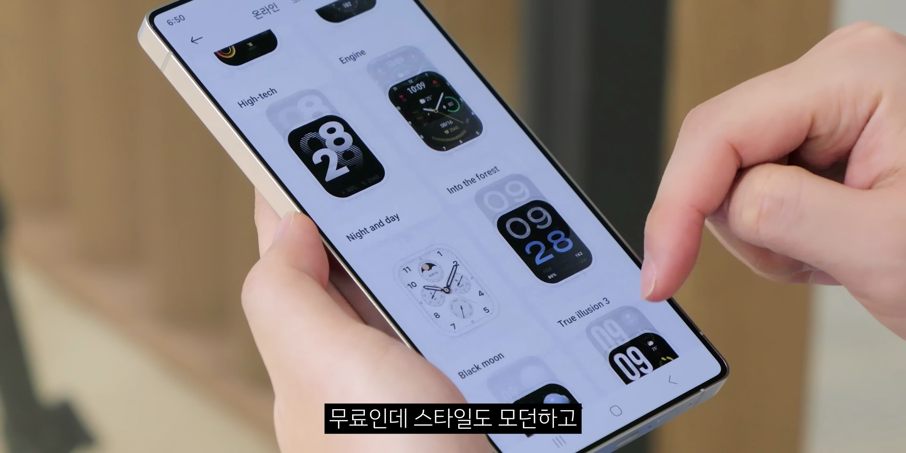
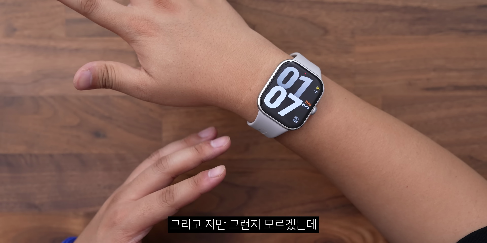
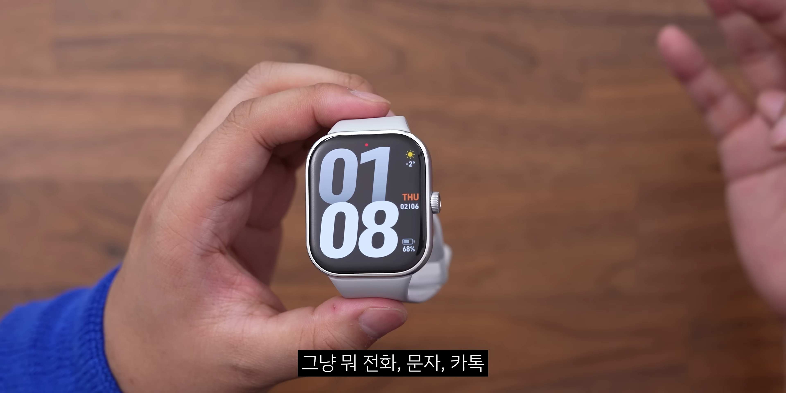

이번 포스팅에서는 샤오미의 신제품, 레드미 워치 5에 대해 심층적으로 분석합니다. 가격, 디자인, 기능, 그리고 사용 경험까지 살펴보며 구매에 도움이 될 수 있는 모든 정보를 제공합니다.
샤오미 레드미 워치 5 소개
- 샤오미 레드미 워치 5의 가격대는 10만원대 초반
- 화면 크기가 크고 하드웨어 퀄리티가 높다
- 내장 GPS 기능이 탑재되어 있다
샤오미 레드미 워치 5는 10만원대 초반의 가격에 하드웨어 빌드 품질이 뛰어나고, 내장 GPS 기능이 있는 스마트워치로 소개됩니다.

디스플레이와 디자인
- 2.07인치 60Hz 아몰레드 디스플레이
- 2.5D 곡면이 적용되어 미려함을 강조
- 얇은 베젤과 고급스러운 디자인
샤오미 레드미 워치 5는 2.07인치 60Hz 아몰레드 디스플레이와 2.5D 곡면이 적용되어 세련된 디자인을 자랑합니다.

조작과 사용성
- 부드러운 스와이프 동작
- 앱 목록 접근이 느린 점 아쉬움
- 알림 및 위젯 편집 기능
조작은 전반적으로 깔끔하나, 앱 목록 접근이 다소 느린 점은 아쉬움으로 남습니다. 또한, 위젯 추가 및 알림 관리 기능도 제공됩니다.

통화 기능
- 블루투스 전화 수발신 지원
- 내장 마이크와 스피커 품질 좋음
- 소음 속에서도 통화 가능성 확인
스마트워치에서 블루투스를 통한 전화 수발신이 가능하며, 내장 마이크와 스피커의 품질이 우수하여 다양한 환경에서도 원활한 통화가 가능합니다.

운동 및 건강 모니터링 기능
- 다양한 운동 유형 지원
- GPS 내장으로 더욱 정확한 운동 기록
- 수면 분석 및 심박수 모니터링 기능
내장된 GPS 기능 덕분에 다양한 운동 유형에 대한 정확한 기록이 가능하며, 수면 분석과 심박수 모니터링 기능도 탑재되어 있습니다.

배터리 성능
- 약 24일 사용 가능성, AOD 사용할 경우 12일
- 충전기가 자석으로 결합되나 불안정한 느낌
- 사용 기간이 길어 일상에서 편리함을 제공
샤오미 레드미 워치 5는 평균적으로 7일에서 10일 정도의 사용이 가능하여 배터리 관리가 보다 용이합니다.

디자인 선택 및 최종 결론
- 세 가지 색상: 블랙, 실버, 라벤더
- 세련된 디자인과 합리적인 가격
- 스마트워치의 기본 기능을 충족하며 필요성에 따라 선택 가능
샤오미 레드미 워치 5는 세련된 디자인과 다양한 기능, 합리적인 가격대로 스마트워치 다운 기본 기능을 만족하며, 특히 일상에서의 활용도가 높습니다.

구매 추천 이유
- 가격대에 비해 뛰어난 기능
- 디자인과 품질 모두 갖춤
- 일상 생활에 유용한 스마트워치
샤오미 레드미 워치 5는 기능과 디자인 모두에서 뛰어난 성능을 보이며, 가격대비 참 좋은 선택이 될 것입니다.
Tags: #스마트워치 #샤오미 #레드미 워치 5 #디스플레이 #GPS #블루투스 통화 #운동 모니터링 #디자인 #배터리 성능 #구매 추천